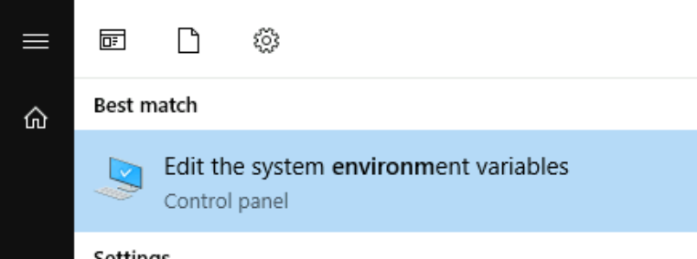
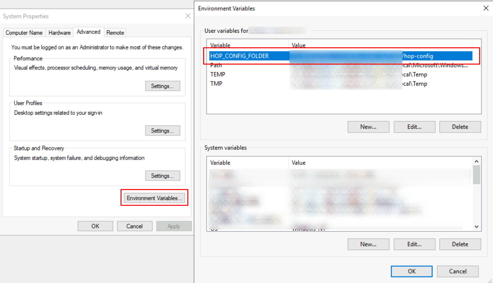

Apache Hop requirements, installation and configuration
Overview
The requirements and installation process for Apache Hop are intentionally kept as simple as possible.
This page covers everything you need to know to install and run Apache Hop on your local desktop or server, from the very basics to more advanced configurations.
Hop is designed to be as flexible and lightweight as possible, and is intended to blend in with your architecture, not the other way around. This makes the basic installation process extremely easy, but there’s a lot of configuration that can be applied to make Hop behave exactly the way you want it to.
| Take a look at the Docker page for instructions to run Hop in containers and Kubernetes environments. |
System Requirements
Hop’s limited footprint should allow it to run on any modern physical or virtual machine.
For the default Hop distribution, a minimum of 1 CPU/core and 4GB RAM should do, even though you can tweak Hop to run on machines with even less memory.
Hop Runs on the following operating systems:
-
Windows 7 or higher
-
Linux (x86_64, ARM)
-
MacOS
-
any modern browser (Hop Web)
Java Runtime
The only requirement Hop has on any supported operating system is the Java Runtime environment.
Apache Hop is known to work well on the following widely used Java Runtimes:
-
Microsoft OpenJDK (OpenJDK builds for Windows, MacOS and Linux).
Apache Hop works well with these 64-bit java runtimes for version 11.
Other Java Runtimes may work but haven’t been used and tested as extensively as the Oracle and OpenJDK JREs, so you may be pioneering. Feel free to open a GitHub ticket if you run into issues, but please mention your JRE and version.
Run java -version if you’re not sure which Java version is currently installed on your system. Your output should be similar to the one shown below.
openjdk version "11.0.2" 2019-01-15
OpenJDK Runtime Environment 18.9 (build 11.0.2+9)
OpenJDK 64-Bit Server VM 18.9 (build 11.0.2+9, mixed mode)Make sure to point the JAVA_HOME environment variable for your operating system to your desired JRE installation. Refer to your operating system’s documentation for more information on environment variables.
Basic Installation
The basic installation for Apache Hop couldn’t be easier:
-
unzip
-
change to your newly unzipped
hopdirectory -
run:
-
hop-gui.bat(Windows) orhop-gui.sh(Linux, MacOS): run Hop Gui -
hop-run.bat(Windows) orhop-run.sh(Linux, MacOS): run workflows or pipelines from the command line. -
hop-server.bat(Windows) orhop-server.sh(Linux, MacOS): start a Hop Server instance.
-
Set (system) environment variables
Apache Hop’s installation and configuration are fully self-contained by default.
With the system or environment variables below, you can make your Hop configuration independent of the installed Hop versions. This lets you switch between Hop versions or installations, while keeping your projects and environment lists, last opened files and other settings.
if you set the environment variables below after you’ve been using Apache Hop for a while, you can move the contents of your hop/config/ folder to your new HOP_CONFIG_FOLDER location
|
Create environment variables in Windows
There are several ways to access the Environment Variables in Windows. One ways is to search for environment variable in the start menu and clicking the "Edit the system environment variables" link (or the corresponding entry for your local language).

In the dialog that pops up, click the Environment Variables button, then add a new HOP_CONFIG_FOLDER user variable and point it to the folder where you’d like to store your Apache Hop configuration. Repeat the process for any of the other variables list below you want to add to your configuration.

Click Ok to close the dialogs and (re)start Hop Gui to activate the environment variables.
Create environment variables in Mac OS or Linux
Add environment variables to your ~/.bashrc, ~/.zshrc or similar configuration file as shown below:
export HOP_CONFIG_FOLDER=<YOUR_PREFERRED_PATH_TO_HOP_CONFIG_FOLDER>.
run source ~/.bashrc or source ~/.zshrc to apply the new variables in your current session.
The environment variables to set
- HOP_CONFIG_FOLDER
-
Hop stores your configuration in the
configfolder by default. Set this environment variable to point to a folder outside of your Hop installation to keep your configuration, projects and environment list etc, no matter which Hop version or installation you use.
copy the contents of an existing hop/conf folder to the path set in HOP_CONFIG_FOLDER to move the configuration from one of your Hop installations to your new central location.
|
- HOP_AUDIT_FOLDER
-
Set this variable to a valid path on your machine to store Hop’s audit information. This information includes last opened files per project, zoom size and lots more.
- HOP_OPTIONS
-
Set this variable to add JVM options, e.g.
-Xmx=2g. This variables' value overrules the settings in the various scripts in your Apache Hop installation.
Check the Environment Variables section for more system variables that can make your life with multiple Hop versions or installations a lot easier.
Upgrade
Multiple Hop versions can be installed side by side with the same process as described in the Basic Installation.
Hop installations are self-contained by default, which means you’ll start with the default configuration and project and environment list with after new Hop install.
With the environment variables described in the previous section, all you need to do to upgrade Apache Hop next to your existing hop installation and start Hop Gui from there. Your projects and environment lists, last opened files etc should all be available.
Apache Hop releases are tested for smooth upgrades. You can replace your existing installation when a new version is released. If you want to keep multiple Apache Hop versions around, consider renaming your unzipped hop folder to hop-version-number, e.g. hop-2.5.0, hop-2.60 etc.
|
Additional configuration
JVM memory settings
By default, Hop only sets a maximum for the JVM Heap size Hop can allocate.
This parameter can be changed in the hop-gui.bat or hop-gui.sh or similar scripts for hop-run and hop-server.
Identify the following line:
HOP_OPTIONS="-Xmx2048m"
The -Xmx parameter determines the maximum amount of memory the JVM can allocate and can be specified in MB or GB.
For example:
-
HOP_OPTIONS=-Xmx512m: start Hop with maximum 512MB of memory -
HOP_OPTIONS=-Xmx2048m: start Hop with maximum 2048MB (or 2GB) of memory -
HOP_OPTIONS=-Xmx4g: start Hop with maximum 4GB of memory
Check the documentation for your JRE for more information about additional JVM configuration, tuning and garbage collection parameters. This guide may help you to get started.
Developers: a couple of lines below the -Xmx parameter, you’ll find another HOP_OPTIONS line that contains -Xdebug. Uncomment this line to allow debuggers to attach to your running Hop instance. Check the developer documentation for more information.
|
Hop environment variables
The following (operating system) environment variables can add a lot of flexibility to configure Hop to your exact needs.
- HOP_AUDIT_FOLDER
-
Set this variable to a valid path on your machine to store Hop’s audit information. This information includes last opened files per project, zoom size and lots more.
- HOP_CONFIG_FOLDER
-
Hop stores your configuration in the
configfolder by default. Set this environment variable to point to a folder outside of your Hop installation to keep your configuration, projects and environment list etc, no matter which Hop version or installation you use.
copy the contents of an existing hop/conf folder to the path set in HOP_CONFIG_FOLDER to move the configuration from one of your Hop installations to your new central location.
|
- HOP_PLUGIN_BASE_FOLDERS
-
Set this variable to point Hop to a comma separated list of folders where you want Hop to look for additional plugins.
When using this variable it will also unset your default plugins folder, make sure to add the default plugin folder to the comma separated list. This can be a relative path to the installation eg. export HOP_PLUGIN_BASE_FOLDERS=./plugins,/additional/plugin/folder.The ./plugins will point to the plugins in the base installation folder
|
- HOP_SHARED_JDBC_FOLDERS
-
This is a comma separated list of folder containing JDBC drivers, default value is lib/jdbc. If you still need the default jdbc drivers when changing this you need to include the default folder path.
JDBC Drivers, Jars, Libraries, and other plugin dependencies
Hop comes with built-in support for tens of databases and a large number of other technologies.
Depending on the Apache and technology vendor’s licenses, the required libraries may not be available in the default Apache Hop distribution.
Download the necessary drivers or other required libraries and add them to your plugin’s lib directory.
For example, to add a JDBC driver for the MySQL database, download the MySQL JDBC jar file and add it to <PATH>/hop/plugins/databases/mysql.
Add any custom jars in lib/core in your Hop installation folder to make those libraries available for your entire Hop installation.
Add any custom jars to plugins/transforms/janino/lib to make them available for the User Defined Java Class transform.
Technology configuration
Hop comes with built-in support for lots of technologies that may require their own (installation and) configuration.
Check the technology page for the platform you need to configure to find out more.